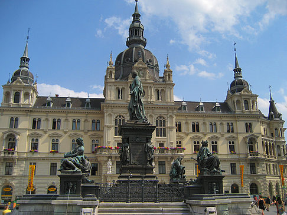
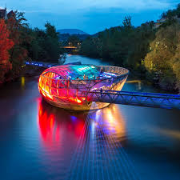
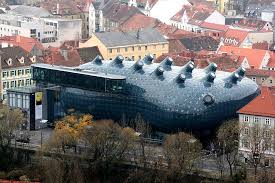
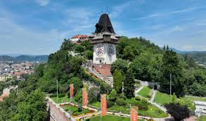
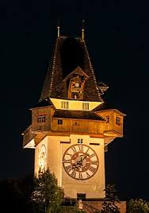

Rathaus (Gradska kuća), Gradska kuća sagrađena je u vrijeme naglog rasta Graza, kako po broju stanovnika, tako i po značaju unutar monarhije. Svojom pojavom dominira Hauptplatzom, što je i bila namjera arhitekata te vlasti.

Murinsel (Ostrvo na Muri), Murinsel je još jedna od građevina izgrađenih povodom toga što je Graz bio "Evropski grad kulture". Može se reći da je Murinsel vratio Graz rijeci Muri. Takođe je to i most između dvije obale - tradicionalnije kojom dominira Schloßberg i one modernije, gdje se prvo primjećuje Kunsthaus.

Kunsthau (Muzej moderne umjetnosti), "Prijateljski vanzemaljac", kako ga često nazivaju, sagrađen je 2003. godine, kako bi Graz dostojno obilježio godinu u kojoj je bio "Evropski grad kulture". Nalazi se na desnoj obali Mure, do tada pomalo zapostavljenom dijelu grada, i zapravo je donio preko potrebnu živost ovom području.

Schloßberg (Tvrđava), biti u Grazu, a ne posjetiti jednu od najljepših evropskih gradskih tvrđava bilo bi prava šteta.

Uhrturm (Kula), Uhrturm je najupečatljiivija znamenitost Graza. Kula se na tom mjestu spominje još u 13. vijeku, a sadašnji oblik dobio je u 16. vijeku.